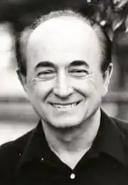
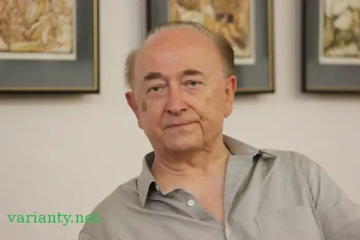

Юрій Тарнавський (1934, Турка, Львівська область) — український поет та прозаїк, один із засновників Нью-Йоркської Групи, та співзасновник і співредактор її літературно-мистецького річника "Нові Поезії".
Юрій Тарнавський народився 3 лютого 1934-ого року в місті Турка на Бойківщині. Його мати була учителькою, а батько учителем і директором школи. До 1939-ого року він провів дитячі роки у Польщі, біля Ряшева, а відтак в Україні — біля Сянока і в Турці. В 1944-ому році виїхав з родиною до Німеччини. Після війни проживав у таборі для переміщених осіб у Новому Ульмі, де й відвідував українську і німецьку гімназії. Закінчив середню освіту екстерном у Мюнхені, перед виїздом до США в 1952-ому році.
З родиною осів у Ньюарку. Там Ю. Тарнавський відвідував Ньюаркський Коледж Інженерії, в якому студіював електронну інженерію. Закінчив ці студії 1956-ого року зі ступенем BSEE, й відтак поступив на працю до відомої компанії комп'ютерів IBM. Перебув у ній до 1992 року. Спершу працював інженером-електроніком, а згодом кібернетиком (computer scientist) над автоматичним перекладом з російської мови на англійську. Завідував відділом прикладних лінґвінстів в IBM, у військовій школі в Сиракюзах (Нью-Йорк) і в Конгресовій Бібліотеці у Вашингтоні. Програма, розроблена його групою, стала першою у світі, що мала застосування в конкретній практиці цього роду пошуків. На відпустці в роках 1964—1965, Юрій Тарнавський проживав в Іспанії. Згодом, не покидаючи праці в IBM, студіював теоретичну лінґвінстику по спеціалізації в трансформаційній граматиці при Нью-Йоркськім Університеті. В 1982-ому році він здобув ступінь доктора філософії (Ph. D.), захистивши дисертацію з питань семантики у Поширеній Стандартній Теорії Ноама Чомського під назвою "Семантика знання". Відтак працював над процесуванням природних і розрібкою штучних мов, як також і в ділянці штучного інтелекту, над експертними системами. За працю в IBM Юрій Тарнавський був відзначений низкою нагород. Він також є автором численних публікацій на кібернетичні й лінґвістичні теми. В 1987-ому році, в рамках відзначення століття Нью-Йоркського Університету, Ю. Тарнавський почесним гостем (keynote speaker) прочитав лекцію під назвою "Штучний інтелект і лінґвістика" у лінґвістичному відділі цього Університету. Відійшовши від IBM, був членом Гарріманського Інституту при Колумбійськім Університеті, професором української літератури і культури у відділі слов'янських мов, як також і спів-координатором української програми (1993—1996) у цьому ж Університеті. Юрій Тарнавський — один із засновників Нью-Йоркської Групи, та спів-засновник і спів-редактор її літературно-мистецького річника "Нові Поезії". Першу збірку поезій Юрія Тарнавського, "Життя в місті", — з її урбаністичними мотивами і зосередженням на темі смерти — критика привітала як новаторську, такою, яка поривала з традицією мови і тематики загальної тогочасної української поезії, вказуючи при тому той напрямок, в який відтак пішло чимало з його сучасників. Згодом, його програмово екзистенціалістичний роман "Шляхи", в якому описане житгя німецької молоді після Другої Світової Війни, також був відзначений як нове слово в українській прозі. Рання поетична творчість Юрія Тарнавського майже повністю вкорінена у західній літературі, особливо в іспаномовній поезії, творчості французьких передсимволістів, в сюрреалізмі та філософії екзистенціалізму. Відтак, з часом, його освіта і праця — так технічні, як і лінґвістичні, — щораз більше впливають на його творчість, внаслідок чого в його творах щораз помітнішим стає радикально нове трактування мови, як, наприклад, у збірках "Без Іспан", "Без ї" й "Анкети", та в романах "Менінґіт" і "Три бльондинки і смерть". У 1960-тих роках Юрій Тарнавський повністю "переходить" на англійську мову в своїй творчості, спершу в прозі, відтак у поезії. Однак, з останньої — поезії — він згодом перекладає українською мовою відповідники з англомовних ориґіналів : збірка "Ось, як я видужую" і наступні п'ять книжок. Він — член групи авангардних американських письменників Fiction Collective, і у видавництві групи публікує англійською мовою вищезгадані "Менінґіт" і "Три бльондинки і смерть", які були високо оцінені американською літературною пресою. Коли політична ситуація в Україні міняється з незалежністю, Юрій Тарнавський повертається до української мови, виступаючи з публікаціями мистецьких творів і статей у періодиці та рядом окремих книжок. Нині в його творчості панують характеристики, що вважаються познакою пост-модернізму, такі, як : багатостилевість, коляж, пастіш і прибирання різних, часами протилежних одна одній, позицій / масок (збірка "Ідеальна жінка", поеми "У РА НА" і "Місто київ та ям", цикл драм "6х0"). Кульмінуєтъся цей процес виданням в Україні тритомника його творів (п'єс, поезії і прози) у видавництві "Родовід" — "6х0" (повне зібрання драм), "Їх немає" (зібрані поезії від 1970 до 1999 років) і "Не знаю" (вибрана проза). Юрій Тарнавський присвятив багато енергії перекладницькій праці з української мови на англійську та з різних мов на українську. Його власні твори були перекладені на англійську, французьку, єврейську, німецьку, польську, португальську, румунську і російську мови. В 1996-ому році, Юрій Тарнавський був резидентом на міжнародній письменницькій колонії Ледіґ Гаус поза Нью-Йорком, де він написав більшість драм, що входять до книги 6х0, а відтак, 1998-ого року — у відомім Нью-Йоркськім авангарднім театрі Мабу Майнз, в якому була поставлена його п'єса Не Медея в англомовнім варіанті. Того ж самого року, в Тернопільському Драматичному Театрі було поставлено його Чотири проєкти на український національний прапор. В 1997-му році, його перші чотири п'єси з книги 6х0 — Сука-скука/розпука, Жіноча анатомія, Не Медея і Карлики — були прочитані перед публікою акторами театральної студії Національного Університету Києво-Могилянська Академія. Юрій Тарнавський — член Національної Спілки Письменників України. Творчість Поезія: "Життя в місті" (Нью-Йорк, 1956) "Пополудні в Покіпсі" (Нью-Йорк, 1960) "Ідеалізована біографія" (Мюнхен, 1964) "Спомини" (Мюнхен, 1964) "Без Еспанії" (Мюнхен, 1969) "Поезії про ніщо і інші поезії на цю саму тему" (Нью-Йорк, 1970). Ця книга становить перший том його зібраних поезій, до якого ввійшло вибране з попередніх збірок і вперше опубліковані збірки: "Пісні є-є", "Анкети", "Вино і ропа" і "Поезії про ніщо". "This Is How I Get Well / Ось, як я видужую" (Мюнхен, 1978) — двомовне видання англійською й українською мовами. "Оперене серце" (журнал "Сучасність", Мюнхен, 1986), поема "Без нічого" (Київ, 1991). Це видання – перше знайомство українського читача в Україні з творчістю поета. До збірки увійшли "Життя в місті" (вибране), "Без Еспанії", "Пісні є-є", "Поезії про ніщо" та поема "Оперене серце". "У ра на", поема (Харків – Нью-Йорк, 1992) "Їх немає" (Київ, 1999). Ця книга становить другий том зібраних поезій автора, до якого ввійшли деякі раніше видані збірки разом із такими, що вперше в ньому друкуються, а саме : "Ось, як я видужую", "Ідеальна жінка", поема "Оперене серце", "Фотографії, це квіти", "Нулі й одиниці", "Зео півонії", "Врослі вірші", "Дорослі вірші" і поеми "У ра на" та "Місто київ та ям". "Oto jak zdrowieje" (Lublin, 2002) — збірка "Ось, як я видужую" польською мовою. Переклав і видав Тадей Карабович. Проза: "Шляхи", роман (Мюнхен, 1961) "Meningitis", a work of fiction (Нью-Йорк, 1978) — англійською мовою. "Three Blondes and Death", a novel (Нью-Йорк, 1993) — англійською мовою. "Не знаю", вибрана проза (Київ, 2000) — книга, до якої ввійшли раніше вже друковані твори разом із такими, що вперше у ній друкуються, а саме : роман "Шляхи" (у новому варіанті), "Сім спроб" (уривки з англомовних прозових книг Смуток, Гіпокрит, Невинний у Парижі, Подорож на південь, Менінґіт, Три бльондинки і смерть, Короткі хвости) і коротка літературна автобіографія "Босоніж додому і назад". Короткі хвости. Кавалки. (Київ: Видавничий Дім Дмитра Бураго, 2006. – 292 с.) – збірка оповідань-автоперекладів із англійської мови (в оригіналі Short Tails). Like Blood In Water (Tuscaloosa, Alabama: The University of Alabama Press, 2007. – 194 pages) – збірка з п'яти мініроманів: Screaming, Former Pianist Fitipaldo, The Joys And Sorrows Of R.York, Pavarotti-Agamemnon, Surgery. – англійською мовою. Переклади: "Як кохався дон Перлімплін з Белісою у саду", Федеріко Ґарсія Льорка, драма, переклад з іспанської (Мюнхен, 1967) "Остання стрічка Краппа", Семюел Бекет, драма, переклад з англійської (Мюнхен, 1972) "Ukrainian Dumy" — oral-tradition epic poetry, translation from Ukrainian with P. Warren (Cambridge, Mass., 1979) "Angels in a Pyramid", Volodymyr Tsybulko, poems, translation from Ukrainian (Lviv, 2001)